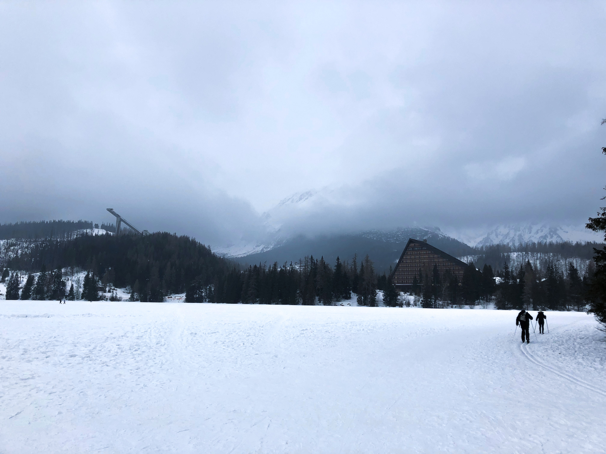
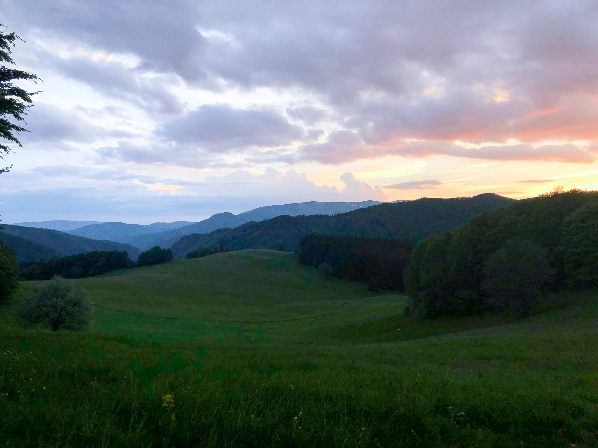
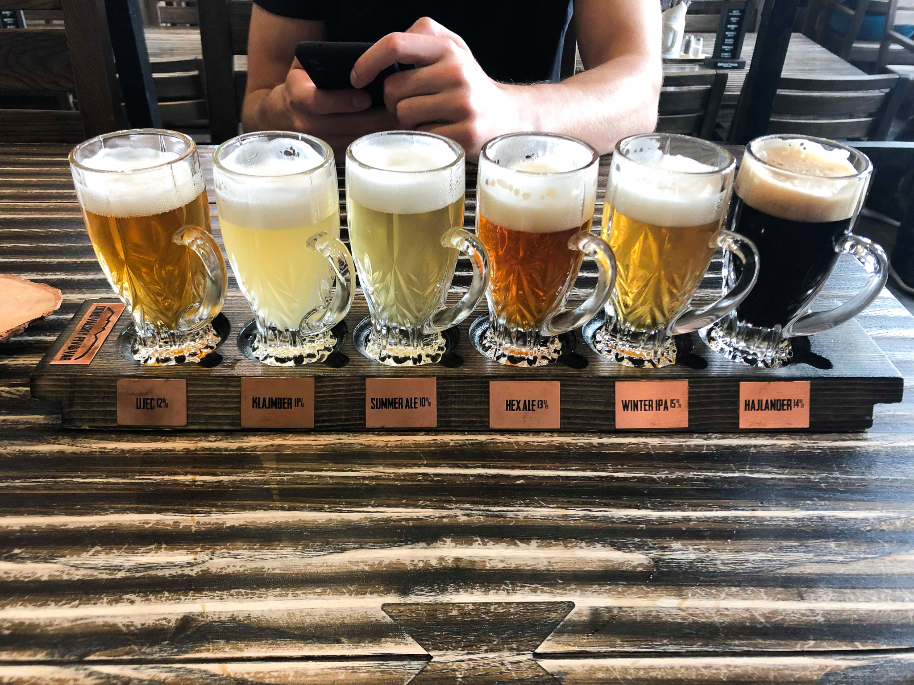
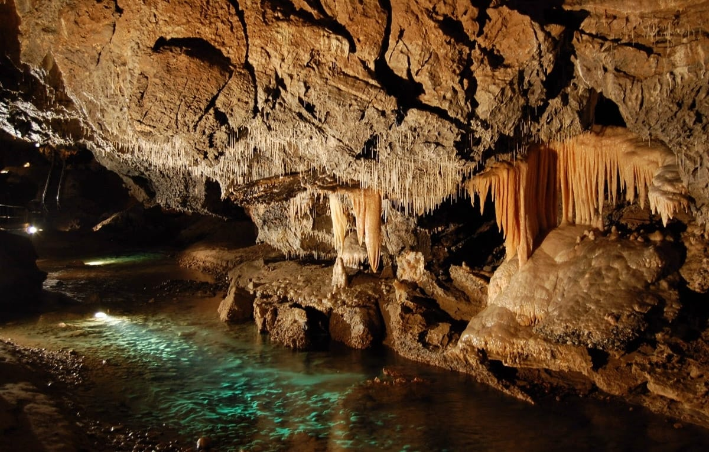
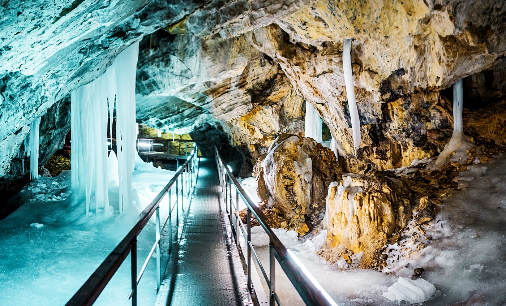

Nature of Slovakia
In this following article you can learn more and get some new information about beautiful Slovak nature. Slovakia is a mountainous country, crisscrossed by many rivers and dotted with several lakes. Several of the pristine nature areas in Slovakia are classified as UNESCO World Biosphere Reserves in order to protect their outstanding beauty. Anyway you should visit these places definitely!
MUST-VISIT PLACES IN SLOVAKIA
High Tatras
The High Tatras of Slovakia are an outdoor paradise. Jagged mountains, emerald green lakes, rugged hiking trails, and cable cars all come together to form the perfect adventure destination.Me and my family are visiting the High Tatras every year mostly in winter. It’s a perfect destination for those who have a passion for nature, relaxation, hiking and enjoying nice moments in the circle of loved ones.
Štrbské pleso

Štrbské Pleso in High Tatras (by Nela Vallová)
Štrbské pleso is the second biggest tarn in Slovakia and the only accessible of all tarns in the Tatras. In the summer tourists can row a boat on its surface and relax while feasting their eyes on the Tatras.
Štrbské Pleso in winter (by Nela Vallová)
Lakes of love
Last year we discovered a very peaceful place with my parents on a walk in the High Tatras. Lakes of Love are few small mountain lakes on the way to the main lake of Štrbske pleso. Hidden in the woods and very romantic. There are not so many people around so you could sit on the bench and enjoy the nature. Lakes are very clean and refreshing.

Lakes of love-winter (by Nela Vallová)

Lakes of love-summer (source:InfoGlobe.CZ)
Donovaly
If you are looking to hike or relax in the mountains, come and visit Donovaly. Donovaly is especially well-known as a winter ski resort, but it’s redesigned its attractions to let visitors have some fun during the summer months too.

Donovaly view with sheeps (by Nela Vallová)
Donovaly view (by Nela Vallová)
Every year I visit Donovaly with my friends. All students in Slovakia have trains for free, so it is a good opportunity to use it and discover the beauties of Slovakia. This year we went back here after graduation. It’s a great place for all ages. In addition to hiking and entertainment, you can taste different kinds of beer. I can highly recommend it
Different types of beer in Donovaly (by Nela Vallová)
Slovak Paradise
The best time to visit Slovak Paradise is during the summer months, when the waterfalls are flowing in the park. The most scenic trails take hikers across wooden food bridges and up ladders, following the same path as the waterfalls. There is more than 300 kilometers of hiking trails in the park, you can spend days here without getting bored.

Hiking in Slovak Paradise (source:JakubSolovsky/Flick)
CAVES
Demänovská Cave of Liberty
One of the most beautiful caves in Europe and the most visited in Slovakia, this national natural monument is full of underground halls and domes, tunnels and richly decorated ponds with stalactite water lilies on the surface and cave pearls at the bottom.
Demänovská Cave of Liberty (source: Slovakia.com)
Dobšinská Ice Cave (UNESCO)
One of the most famous ice caves in the world. The ice filling occurs in the form of ground ice, waterfalls, ice stalagmites and columns. The temperature here gets never over the 0°C. Thanks to its significance and unique ornamentation, it was included into the UNESCO World Heritage List.
Dobšinská Ice Cave (UNESCO)(source: ePhoto)
By Nela Vallová, November 2019